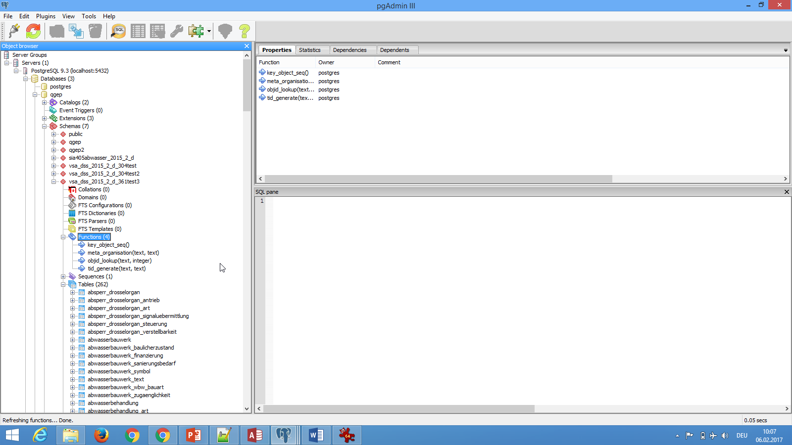

3.3. Export de données au format INTERLIS¶
Ce chapitre présente un guide pour l’export de données depuis QGEP vers le format INTERLIS 2 (xtf).
3.3.1. Général¶
L’import INTERLIS peut être réalisé en utilisant l’outil illi2pg de la société Eisnhut Informatik et une série de scripts SQL préconfigurés. Ceux-ci vont réaliser:
Traduction Anglais - Allemand / Français (Classes/Attributs)
Conversion d’une liste de valeurs vers/depuis des valeurs numériques (integer)
Restructuring of data from relational to object oriented modelling
Conversion of OID (16 characters) to foreign keys TID (integer)

3.3.2. Pas à pas¶
3.3.2.1. Outil¶
Télécharger la dernière version de ili2pg

3.3.2.2. Générer le shéma du modèle de données à l’aide de postgres ili2pg¶
a) Generate schema with data model You need the wanted INTERLIS model with all related models:
Units.ili
Base.ili
SIA405_Base.ili
VSA_DSS_2015_2_d_20170602.ili pour la version 2015 –> versions corrigées
>>> java -jar ili2pg.jar --createEnumTxtCol --schemaimport --importTid --sqlEnableNull --createEnumTabs --createFk --noSmartMapping --dbdatabase qgep --dbschema vsa_dss_2015_2_d_391 --dbusr postgres --dbpwd sjib --log createschema_VSA_DSS_2015_2_d_391.log VSA_DSS_2015_2_d_20170602.ili
>>> --importTid --sqlEnableNull --createEnumTabs --createFk --noSmartMapping
b) Generate schema with transferdata This example uses the Transferdataset transferdatensatz2015_d_mod.xtf and the VSA-DSS 2015 Modell file with all it’s corresponding models.
We create a batch file for the import with ili2pg to create an ili2pg schema (named vsa_dss_2015_2_d) in postgres importdaten_VSA_DSS_2015_2_d_381.bat
Adaptez à votre environnement si nécessaire.
>>> java -jar ili2pg.jar --createEnumTxtCol --import --importTid --sqlEnableNull --createEnumTabs --createFk --noSmartMapping --dbdatabase qgep --dbschema vsa_dss_2015_2_d --dbusr postgres --dbpwd sjib --log importdaten_VSA_DSS_2015_2_d_361.log transferdatensatz2015_d_mod.xtf
Attention
Il est très important d’avoir ces paramètres:
>>> --importTid --sqlEnableNull --createEnumTabs --createFk --noSmartMapping
Vous devez avoir les fichiers modèles nécéssaires (.ili) dans le même dossier que le fichier .xtf.
Units.ili
Base.ili
SIA405_Base.ili
VSA_DSS_2015_2_d_20170602.ili pour la version 2015 –> versions corrigées
(!! 29.5.2017 Beziehung Erhaltungsereignis.Ausfuehrende_Firma 0..* statt 0..1 (Fehlerkorrektur) !! 2.6.2017 Beziehung Abwasserknoten_Hydr_GeometrieAssocRef – {0..*} statt 0..1 (Fehlerkorrektur))
Créez les tables modèles dans le schéma d’export avec les enregistrements des requêtes de création.
00_vsa_dss_2015_2_d_304_schema_generate.sql : create schema
03_vsa_dss_2015_2_d_304_schema.sql : create tables and metatables (version 2015)
Modifiez le schéma ili2pg et complétez-le avec les métadonnées.
042_vsa_dss_2015_2_d_304_insert_t_ili2db_attrname_metadata.sql
043_vsa_dss_2015_2_d_304_t_ili2db_attrname_add_column_owner_for_ili2pg301.sql : Only needed if column does not exist yet (old ili2pg versions)

044_vsa_dss_2015_2_d_304_t_ili2db_classname_VSA_DSS_2015_2.sql : insert VSA-DSS Model 2015 model classes

045_vsa_dss_2015_2_d_304_t_ili2db_model_VSA_DSS_2015_2.ili_metadata.sql : insert VSA-DSS Model 2015 in metatable

047_vsa_dss_2015_2_d_340_t_ili2db_inheritance_create.sql
048_vsa_dss_2015_2_d_340_t_ili2db_trafo_metadata.sql
3.3.2.3. Explication du schéma ili2pg¶
Les 3 méthodes créent les tables vsa_dss et toutes les tables-modèle liées.
sia405_baseclass
sia405_symbolpos
sia405_textpos
and some metatables for ili2pg:
t_ili2db_attrname: iliname - sqlname
t_ili2db_basket
t_ili2db_classname: iliname - sqlname
t_ili2db_dataset
t_ili2db_import
t_ili2db_import_basket
t_ili2db_import_object
t_ili2db_inheritance
t_ili2db_model : bezeichnungen
t_ili2db_settings
t_ili2_db_trafo: new from ili2pg 3xx -> Daten abfüllen TO DO
t_ili2_db_seq: new from ili2pg 3xx -> fehlt in 03 – neu 021_erzeugen und Daten abfüllen TO DO
t_key_object: missing in script 03 -> create with 046 and add data
3.3.2.4. Ajoute des fonctions additionnelles¶
Nous avons besoin d’une série de fonctions pour transformer le schéma créé par ili2pg en un schéma qgep
01_vsa_dss_2015_2_d_304_tid_generate.sql : Function to generate new tid in baseclass and sia405_baseclass when obj_id exists
02_vsa_dss_2015_2_d_304_tid_lookup.sql : Function to look up tid – used in 060
021_vsa_dss_2015_2_d_304_create_seq_ili2db.sql : only for old versions of ili2pg if not created with step above
022_vsa_dss_2015_2_d_304_basket_update : only for old versions of ili2pg if not created with step above

046_vsa_dss_2015_2_d_304_t_key_object_insert_metadata.sql to create t_key_object if table does not exist and add data.

3.3.2.5. Lancer les requêtes exportée dans votre modèle de données¶
Pour l’export vsa_dss
051_vsa_dss_2015_2_d_304_interlisexport2.sql : for VSA-DSS 2015 export
kf_0511_geoAbwBW_li2cu.sql : change from compoundcurve to linestring (ändert Geometrie type in export schema (curve))
052a_vsa_dss_2015_2_d_304_interlisexport2.sql : second part of data export
Pour l’export SIA 405 assainissement
051_sia_2015_2_d_304_interlisexport2.sql for SIA405 2015 export
etc.
But then the ili2pg schema needs to be created with SIA405 Abwasser model structure.
3.3.2.6. Export des données du schéma ili2pg vers INTERLIS¶
The following call exports the data into INTERLIS2 sia405abwasser (Version 2015)
>>> java -jar ili2pg.jar --trace --export --log export_sia405abwasser_2015_2_d.log --models SIA405_Abwasser_2015 --dbhost localhost --dbport 5432 --dbdatabase qgep --dbschema sia405abwasser --dbusr postgres --dbpwd yourpassword export.xtf
–models <tag> sets the model name. The model files have to be in the same folder.
–log <tag> can be set as wanted – it makes sense to name it in a structured way export_ & name of dataset_ & modellversion(ili name).log
Adapt dbdatabase, dbschema, dbusr and dbpwd
This needs the following model files / Braucht folgende Modelldateien (licence for use needed from VSA or sia – you can get it by purchasing Norm SIA405 or VSA-DSS CD):
units.ili
base.ili
sia405_base.ili
SIA405_Abwasser_2015_2_d.ili
La commande suivante exporte les données vers INTERLIS2 sia405 assainissement (Version 2014)
>>> java -jar ili2pg.jar --trace --export --log export_sia405abwasser_2014_2_d.log --models SIA405_Abwasser --dbhost localhost --dbport 5432 --dbdatabase qgep --dbschema sia405abwasser --dbusr postgres --dbpwd yourpassword export.xtf
Modèles nécessaires: units.ili, base.ili, sia405_base.ili, SIA405_Assainissement_2014_2_d.ili
3.3.2.7. Quality control with VSA online checker (Fachprüfung mit VSA Checker (online))¶
see https://www.vsa.ch/fachbereiche-cc/siedlungsentwaesserung/wegleitung-gep-daten/gep-datachecker/ -> Link to login at infogrips.
3.3.2.8. Questions en suspens¶
_text classe are not exported properly - no data in qgep
contrôle si le statut est exporté correctement.
3.3.2.9. Problèmes éventuels¶
compoundcurve to linestring needed
2D -> 3D coordinates (use ST_Force2D from postgis extension)